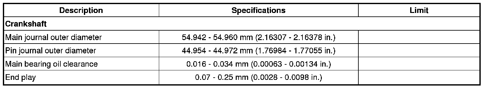

Crankshaft Main Bearing: Specifications
Main bearing cap bolts.

Using SST (09221-4A000), install and tighten the 10 main bearing cap bolts, in several passes, in the sequence as shown.
Tightening torque
1st step: 27.5 - 31.4 N.m (2.8 - 3.2 kgf.m, 20.3 - 23.1 lb-ft)
2nd step: 120 - 125°

CAUTION:
- Do not reuse the bearing cap bolts.
- Do not apply engine oil on the bolt threads to achieve correct torque.
NOTE:
- The main bearing cap bolts are tightened in 2 progressive steps.
- If any of the bearing cap bolts is broken or deformed, replace it.
- Be sure to assemble the main bearing cap bolts in correct order.
Crankshaft

Main Bearing Size Codes